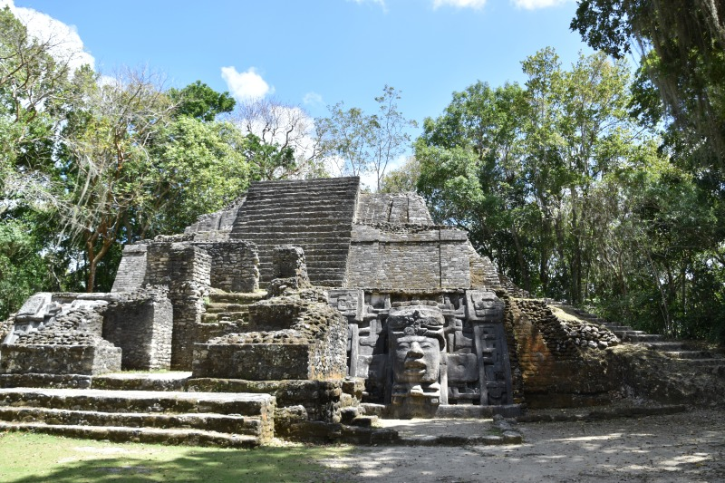

ベリーズは中央アメリカの東部に位置し、メキシコの南、グアテマラの北東に隣接しています。カリブ海に面しており、自然豊かな環境が広がっています。
ベリーズの国土は熱帯雨林、マングローブ、サバンナ、海岸線など多様な自然が特徴です。国内には古代マヤ文明の遺跡や、世界遺産のグレートブルーホールなどもあります。
ベリーズの人々は自然環境と深く結びついており、農業、漁業、観光など多くの産業が自然資源に依存しています。持続可能な開発と環境保護が重要なテーマです。
ベリーズの人々は国土の豊かな自然資源を利用し、生活の基盤としています。都市部と農村部では生活様式や経済活動に違いがありますが、どちらも自然に依存しています。
ベリーズは6つの地区（district）に分かれており、各地区には独自の文化や景観があります。中心都市ベルモパンやバミューダ・ラングーンなどがあります。
ベリーズは持続可能な開発目標（SDGs）を達成するために取り組んでいます。特に気候変動対策や海洋保護、貧困削減などが重要な課題です。